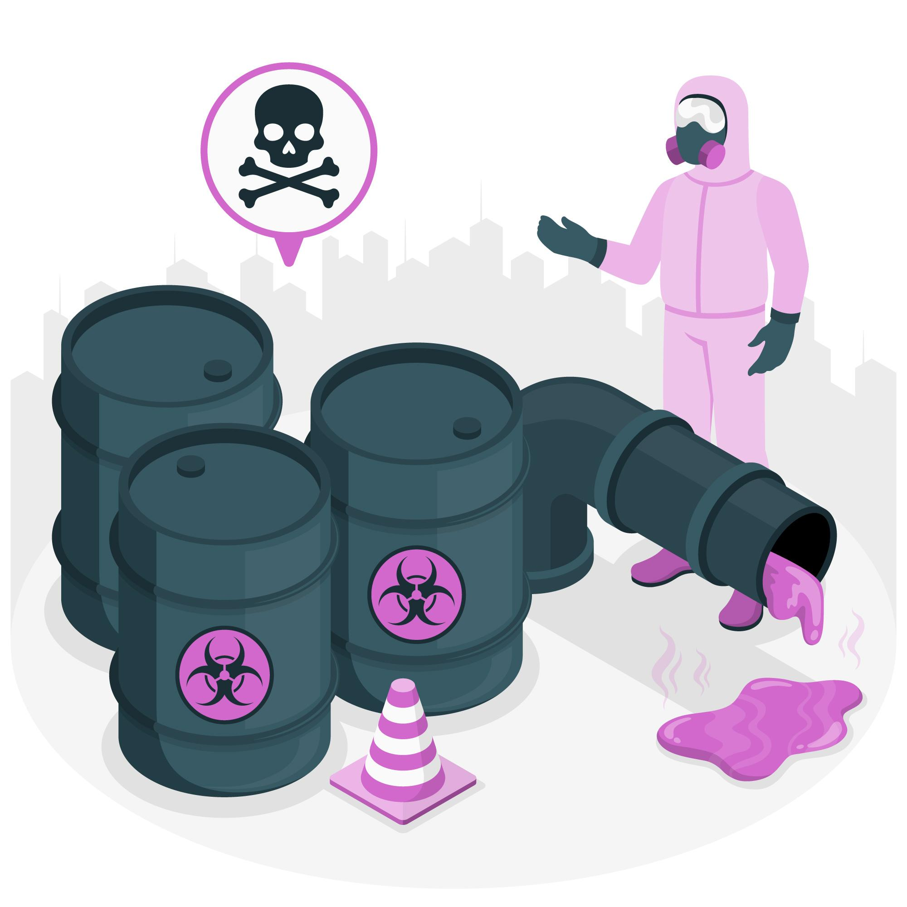
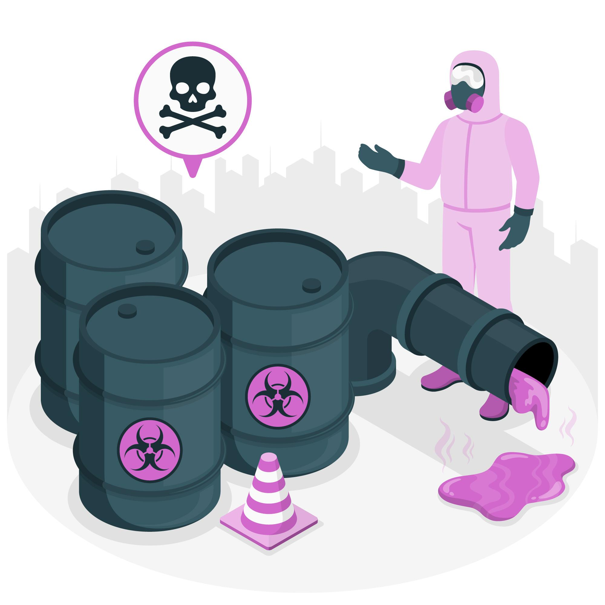
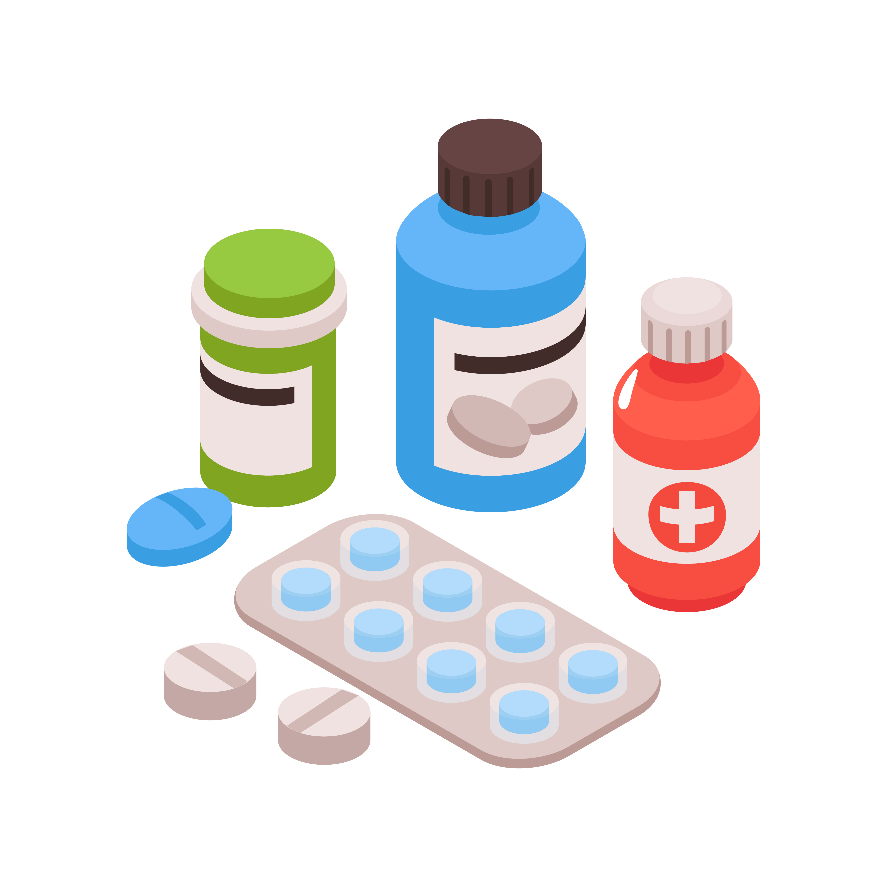
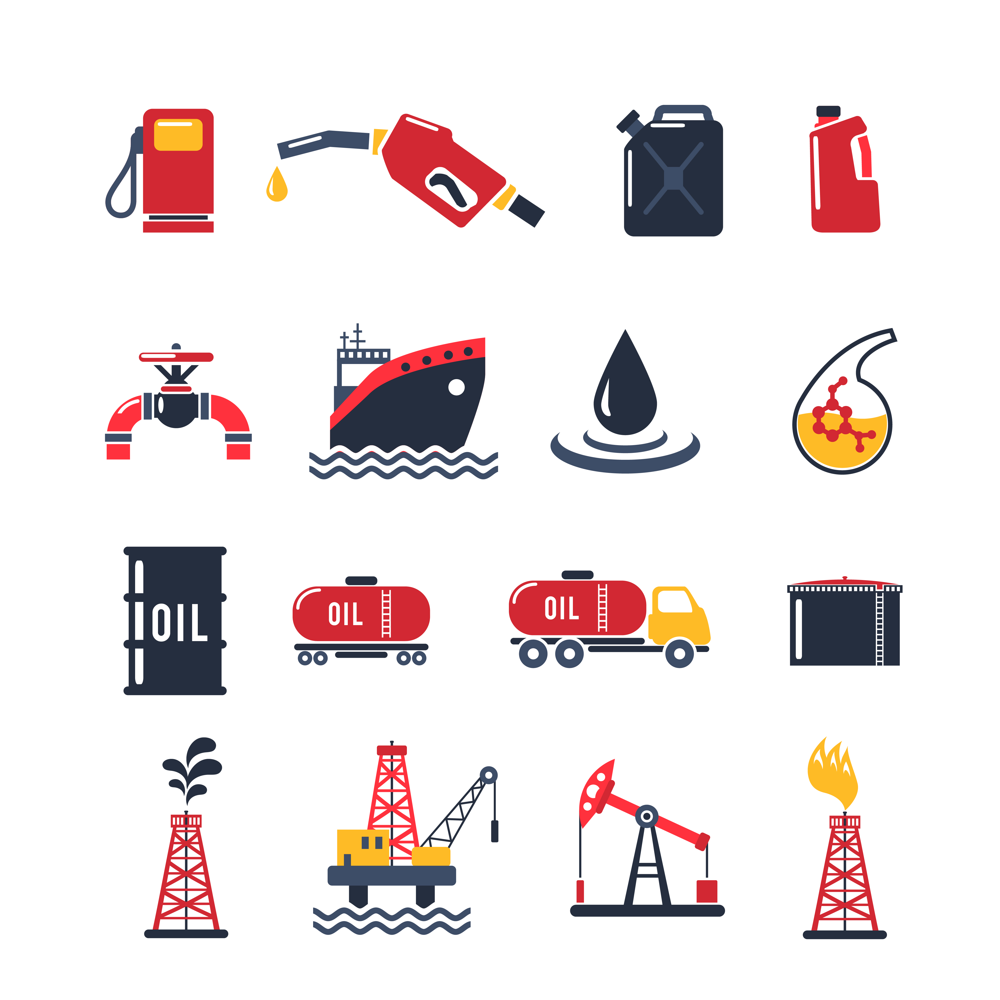
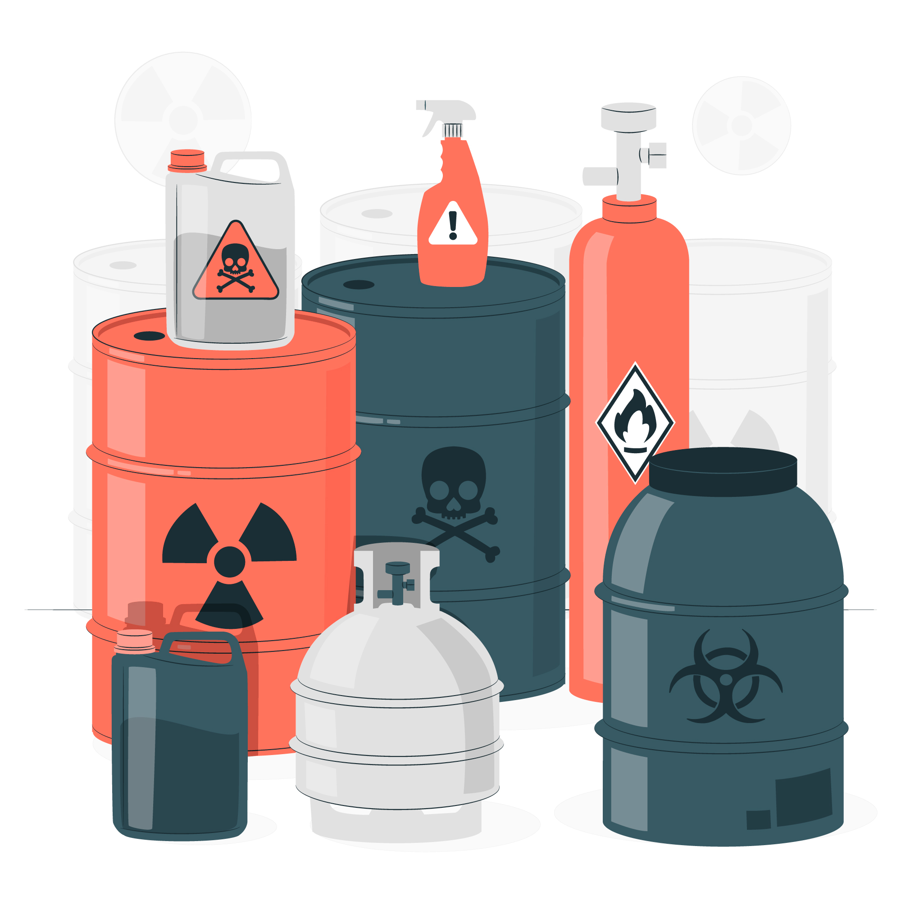

Imagem de storyset

Imagem de storyset

O projeto chamado “Reduzir substancialmente o número de mortes e doenças por produtos químicos perigosos” é uma iniciativa muito importante que tem como principal objetivo informar, conscientizar e ajudar as pessoas a entender melhor os riscos que os produtos químicos podem representar para a saúde humana e para o meio ambiente.
Em nosso dia a dia, muitas vezes estamos em contato com substâncias químicas sem sequer perceber — seja em produtos de limpeza, alimentos industrializados, cosméticos, ambientes de trabalho ou até mesmo no ar que respiramos. Quando essas substâncias não são utilizadas ou descartadas corretamente, podem causar sérios danos à nossa saúde, como alergias, intoxicações, problemas respiratórios e até doenças mais graves.
Esse projeto faz parte de um movimento maior e global: os Objetivos de Desenvolvimento Sustentável (ODS), estabelecidos pela Organização das Nações Unidas (ONU). Mais especificamente, ele se relaciona com a meta de promover a saúde e o bem-estar para todos, em todas as idades, garantindo que vivamos em um mundo mais seguro, consciente e sustentável.
A missão do projeto vai muito além de apenas alertar. Ele também busca promover ações práticas que ajudem as pessoas a se protegerem, incentivar o uso responsável de produtos químicos, divulgar alternativas menos tóxicas e apoiar políticas públicas e iniciativas que tornem os ambientes — sejam eles domésticos, escolares, industriais ou urbanos — mais seguros para todos.
Ao informar de forma clara e acessível, o projeto quer empoderar cada indivíduo para que ele seja parte ativa na construção de um futuro mais saudável, tanto para si mesmo quanto para as próximas gerações. Afinal, quando cuidamos da nossa saúde e do meio ambiente, estamos também cuidando do bem-estar coletivo e do planeta como um todo.
Além disso, o projeto também reforça a importância de criar espaços de diálogo entre especialistas da saúde, ciência, educação e comunidade em geral. Esses espaços são fundamentais para compartilhar experiências, identificar os principais desafios e, principalmente, encontrar soluções conjuntas para reduzir os impactos negativos causados por substâncias químicas no cotidiano.
Acreditamos que, com informação de qualidade e ações concretas, é possível transformar a forma como lidamos com esses produtos e construir uma sociedade mais consciente, responsável e comprometida com a vida. Esse projeto é um passo importante nessa direção — e quanto mais pessoas fizerem parte dele, mais impacto positivo poderemos gerar juntos.

Produtos químicos inorgânicos são substâncias que, em sua maioria, não contêm carbono como elemento principal (ao contrário dos compostos orgânicos, que geralmente são formados por cadeias de carbono). Eles estão presentes em muitas coisas que usamos ou vemos todos os dias — mesmo que a gente não perceba.
Um bom exemplo são os sais, ácidos, bases e óxidos. Substâncias como o sal de cozinha (cloreto de sódio), a água sanitária (hipoclorito de sódio), a soda cáustica (hidróxido de sódio) e até o dióxido de carbono (CO₂, que respiramos) são todos compostos inorgânicos.
Esses produtos podem ser muito úteis: estão presentes na limpeza da casa, em processos industriais, em tratamentos de água, na construção civil, na agricultura e até na área da saúde. No entanto, também podem ser perigosos se forem manipulados de forma incorreta ou sem os devidos cuidados.
Por isso, é essencial que as pessoas entendam o que estão usando. Muitos produtos inorgânicos têm propriedades corrosivas, tóxicas ou reativas, o que significa que podem causar queimaduras, intoxicações ou reações químicas perigosas se não forem manuseados com atenção.
Em resumo, produtos químicos inorgânicos fazem parte do nosso cotidiano e têm uma importância enorme — tanto para o desenvolvimento da sociedade quanto para a nossa vida prática. Mas, como tudo que envolve química, é fundamental usá-los com consciência, responsabilidade e segurança.
Produtos químicos orgânicos são substâncias que têm como base o carbono. Eles formam a maior parte dos compostos existentes no planeta — e o mais curioso é que eles estão diretamente ligados à vida. Isso mesmo: tudo o que é vivo (ou que um dia já foi) está repleto de compostos orgânicos.
Esses produtos incluem coisas muito próximas do nosso dia a dia, como os alimentos, os plásticos, os remédios, os combustíveis (como gasolina e álcool), os cosméticos e até o tecido das roupas que vestimos. Compostos como a glicose (o açúcar do sangue), a cafeína do café, o álcool etílico e os óleos vegetais são todos exemplos de substâncias orgânicas.
O que torna os compostos orgânicos tão especiais é a capacidade do carbono de se ligar de várias formas diferentes — formando estruturas simples, ramificadas, cíclicas e até gigantescas, como as proteínas e os ácidos nucleicos (como o DNA). Essa versatilidade é o que dá origem à enorme variedade de compostos orgânicos existentes.
Mas, apesar de serem tão comuns e necessários, os produtos químicos orgânicos também precisam ser usados com atenção. Alguns podem ser tóxicos, inflamáveis ou poluentes, como certos solventes, combustíveis e resíduos industriais. Por isso, o uso consciente e a informação correta são essenciais, tanto para a saúde das pessoas quanto para a preservação do meio ambiente.
Em resumo, os compostos orgânicos estão em praticamente tudo ao nosso redor — e são parte fundamental da vida. Aprender sobre eles é entender melhor como o mundo funciona e como podemos usá-los de forma mais segura, inteligente e sustentável.

Produtos químicos naturais são substâncias que são produzidas pela própria natureza, sem a interferência direta do ser humano em sua criação. Eles podem ser encontrados em plantas, animais, microrganismos, minerais e em diversos processos naturais que acontecem ao nosso redor o tempo todo.
Por exemplo, o café que tomamos pela manhã contém cafeína, um composto natural produzido pelas plantas como defesa contra insetos. O alho libera um composto chamado alicina, com propriedades antimicrobianas. A própolis, feita pelas abelhas, é cheia de substâncias naturais que protegem a colmeia contra bactérias. Esses são só alguns exemplos de produtos químicos naturais com efeitos reais no nosso corpo e na nossa saúde.
Esses compostos são estudados há muitos anos pela ciência, especialmente pela química verde, fitoterapia e pela indústria farmacêutica, já que muitos remédios são desenvolvidos a partir de substâncias naturais ou inspirados nelas. Um exemplo famoso é o ácido acetilsalicílico (AAS), derivado da casca do salgueiro, usado como base para a aspirina.
Mesmo sendo naturais, esses compostos também podem ter efeitos fortes, dependendo da dose e do uso. Afinal, a natureza também produz venenos e toxinas — como o veneno de algumas cobras ou o látex de certas plantas. Por isso, mesmo que algo seja "natural", isso não significa que seja automaticamente seguro ou inofensivo.
No dia a dia, os produtos químicos naturais estão nos alimentos, nas plantas medicinais, nos óleos essenciais, nas frutas, nas ervas, nos chás e até na terra que pisamos. Entender mais sobre eles é uma forma de se conectar com a natureza e usar seus recursos com mais respeito, sabedoria e cuidado.
Produtos químicos sintéticos são aqueles que não existem naturalmente na natureza, mas que foram criados ou modificados pelo ser humano em laboratórios ou indústrias, geralmente com o objetivo de imitar, melhorar ou substituir substâncias naturais — ou até criar algo totalmente novo.
Esses produtos fazem parte da nossa vida moderna em praticamente tudo: plásticos, tintas, medicamentos, cosméticos, pesticidas, combustíveis, tecidos sintéticos, produtos de limpeza e até adoçantes artificiais. Tudo isso foi desenvolvido com o uso da ciência para atender a demandas específicas da sociedade.
Muitas vezes, os compostos sintéticos foram criados como uma alternativa mais barata, mais durável ou mais eficiente do que os naturais. Por exemplo, o nylon foi inventado como um substituto para a seda. O paracetamol, um remédio comum, é um composto sintético criado para aliviar dores e febre com segurança. E os detergentes sintéticos foram desenvolvidos para limpar melhor e com menos impacto sobre o meio ambiente do que os sabões antigos.
No entanto, como tudo na química, os produtos sintéticos precisam ser usados com responsabilidade. Alguns podem causar impactos ambientais ou à saúde se forem descartados incorertamente, usados em excesso ou produzidos sem os devidos cuidados. Por isso, a conscientização sobre o uso seguro e sustentável desses produtos é fundamental.
Em resumo, os produtos químicos sintéticos são fruto da inteligência humana aplicada à química. Eles trouxeram conforto, avanço tecnológico e soluções para muitos problemas do cotidiano — mas, como qualquer ferramenta poderosa, exigem conhecimento, cuidado e consciência para serem usados da melhor forma possível.

Produtos químicos de limpeza são substâncias criadas especialmente para remover sujeira, manchas, gordura, microrganismos e outras impurezas de superfícies, objetos ou até do corpo humano. Eles estão em praticamente toda casa, empresa, escola ou hospital — e fazem parte da nossa rotina diária, muitas vezes sem que a gente perceba o quão importantes (e poderosos) eles são.
Esses produtos podem conter uma mistura de compostos orgânicos, inorgânicos, naturais ou sintéticos, dependendo da função que precisam cumprir. Por exemplo, detergentes ajudam a quebrar a gordura, alvejantes eliminam manchas e bactérias, desinfetantes matam microrganismos, e sabões fazem a sujeira “desgrudar” das superfícies.
Apesar de serem essenciais para a higiene e prevenção de doenças, muitos desses produtos contêm substâncias químicas que podem ser tóxicas, corrosivas ou irritantes se usados de forma incorreta. Por isso, é super importante ler os rótulos, usar luvas quando necessário, manter fora do alcance de crianças e nunca misturar produtos diferentes sem orientação, pois algumas combinações podem gerar gases perigosos (como misturar água sanitária com amônia).
Nos últimos anos, também tem crescido o interesse por produtos de limpeza mais naturais e sustentáveis, com menos impacto para a saúde e o meio ambiente — como os feitos com vinagre, bicarbonato de sódio ou extratos vegetais. Embora sejam mais suaves, eles também exigem atenção e conhecimento para serem eficazes e seguros.
No fim das contas, os produtos de limpeza são aliados valiosos na nossa saúde e bem-estar — mas, como todo produto químico, precisam ser usados com cuidado, responsabilidade e consciência.
Produtos químicos perigosos são substâncias que, por suas propriedades, podem causar danos à saúde humana, ao meio ambiente ou até provocar acidentes como explosões, incêndios ou contaminações. Eles são muito comuns em indústrias, hospitais, laboratórios, mas também podem estar presentes em nossas casas — às vezes bem mais perto do que a gente imagina.
Esses produtos podem ser perigosos por vários motivos:
Mesmo sendo perigosos, esses produtos têm sua utilidade e, quando usados corretamente, podem ser grandes aliados — principalmente na limpeza, na conservação de alimentos, na agricultura ou na medicina. O problema acontece quando faltam informação, proteção ou cuidado.
Por isso, é essencial ler os rótulos, prestar atenção nos símbolos de perigo, usar equipamentos de proteção, como luvas e máscaras, e armazenar esses produtos fora do alcance de crianças e animais. Também nunca se deve misturar substâncias químicas sem saber exatamente o que está fazendo — muitas reações podem ser extremamente perigosas.
Entender os riscos e saber como se proteger é o primeiro passo para usar produtos químicos perigosos com segurança e responsabilidade. Informação salva vidas!
Quando produtos químicos são mal descartados ou usados em excesso, os impactos ao meio ambiente podem ser profundos e muitas vezes irreversíveis:
A exposição a produtos químicos pode ser perigosa de formas diferentes, dependendo da forma de contato (inalação, ingestão ou pele), da quantidade e do tempo de exposição.
Acidentes domésticos: Produtos químicos guardados sem tampa, mal identificados ou misturados indevidamente (como água sanitária com amônia) podem causar acidentes sérios — especialmente com crianças ou idosos em casa.
Os produtos químicos estão presentes no nosso dia a dia: desde o sabão em pó até o desentupidor, do perfume ao agrotóxico. O problema é que, por parecerem tão comuns, muitas vezes as pessoas usam sem pensar, sem ler, sem cuidado — e é aí que mora o risco. Por isso, conscientizar é fundamental: não é sobre assustar, mas sim ajudar a entender e prevenir.
Muita gente acha que falar sobre química é complicado ou "coisa de cientista". Mas, quando a gente fala de um jeito simples, mostrando como isso se conecta com a vida real, todo mundo entende.
Em vez de dizer “produtos com cloro podem liberar gases tóxicos ao reagir com amônia”, que tal: “Misturar água sanitária com limpador de banheiro pode liberar um gás que faz mal na hora — dá tontura, ardência nos olhos e pode até desmaiar.”
Conscientização funciona melhor quando a linguagem é acessível e próxima do cotidiano das pessoas.
Pessoas prestam mais atenção quando conseguem se enxergar no problema. Falar sobre alguém que se intoxicou ao limpar o banheiro fechado, ou uma criança que bebeu produto guardado em garrafa de refrigerante, causa mais impacto do que apenas alertar de forma genérica.
Exemplo: “Você sabia que um dos acidentes domésticos mais comuns é criança tomando produto de limpeza achando que é suco?”
Esse tipo de exemplo desperta cuidado e empatia — e ajuda a fixar o que realmente importa.
Conscientizar também é ensinar a fazer certo. Às vezes, o erro não vem por maldade, mas por falta de orientação. Então é importante explicar de forma clara e prática:
Essas atitudes simples podem evitar muitos problemas sérios.
Muita gente ainda joga produtos químicos vencidos ou sobras no vaso, no ralo ou no lixo comum — sem saber o estrago que isso pode causar.
Isso contamina rios, solo, prejudica os animais, as plantações e, claro, a nossa saúde também. Por isso, é essencial explicar:
A conscientização ambiental começa no pequeno gesto — e se espalha.
Conscientizar os adultos é importante, mas educar as crianças é ainda mais poderoso. Quando elas aprendem a lidar com produtos químicos desde pequenas, crescem com mais responsabilidade e ainda ajudam os pais em casa.
Escolas podem promover:
E o melhor: as crianças se tornam multiplicadoras — ensinam os irmãos, os pais, os vizinhos.
A gente convence muito mais com atitudes do que com discursos. Se você usa luvas, separa o lixo, lê rótulos e faz o descarte correto, as pessoas à sua volta começam a notar — e imitar. A conscientização cresce pelo exemplo.
Quando alguém vê você limpando com máscara e deixando a janela aberta, provavelmente vai perguntar:
“Por que você faz isso?” — e aí começa a conversa.